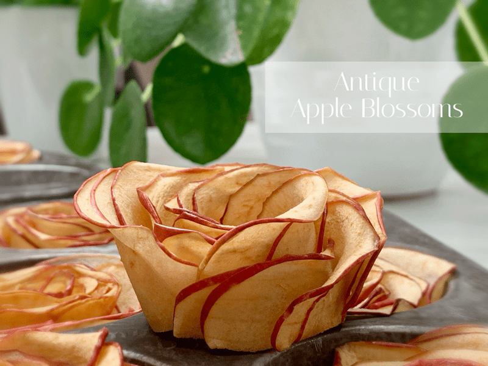
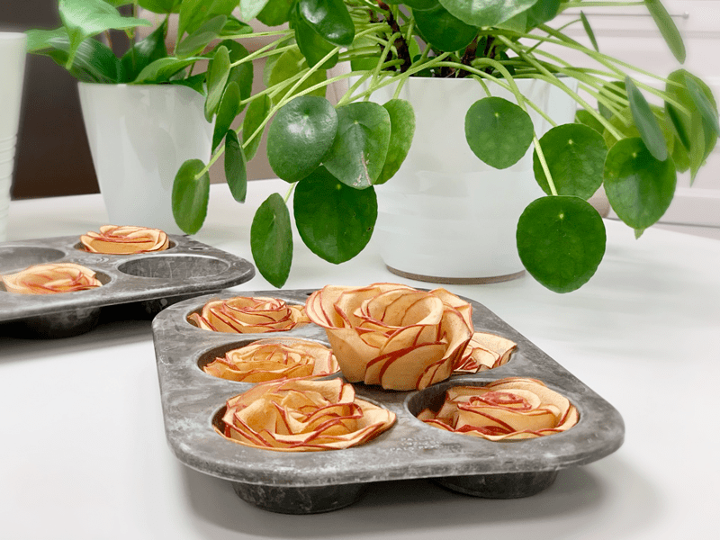
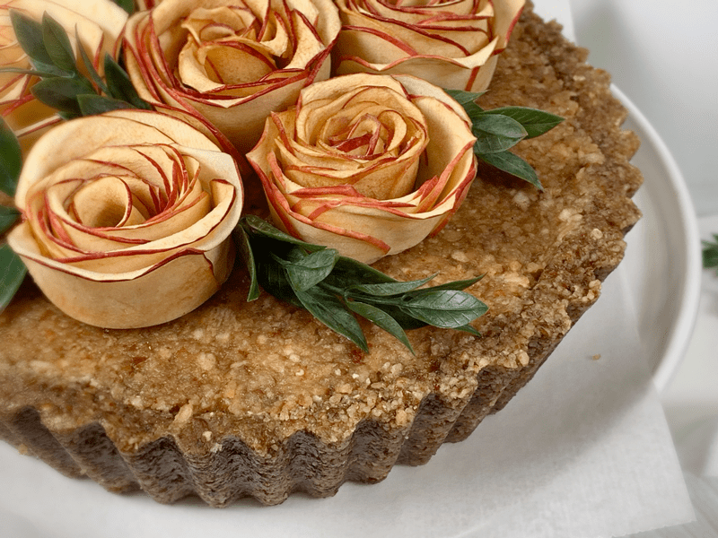
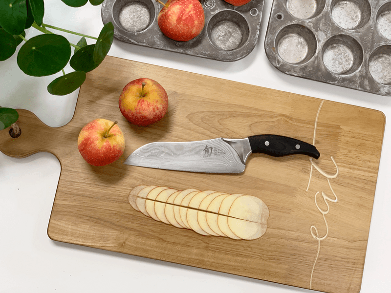
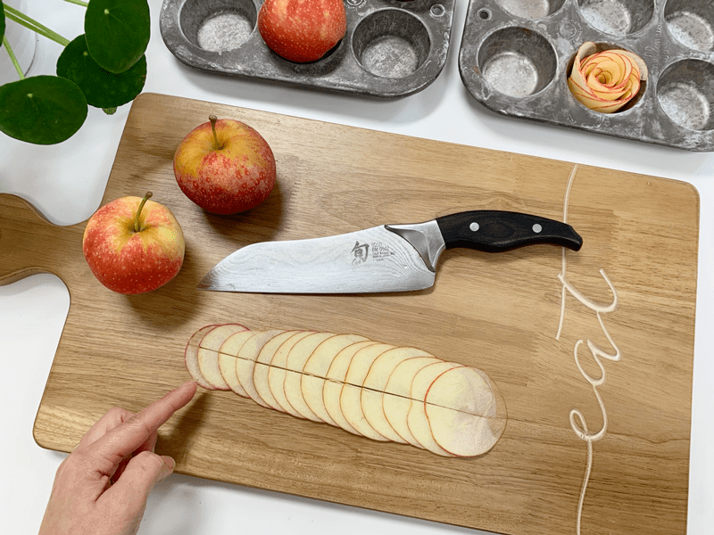
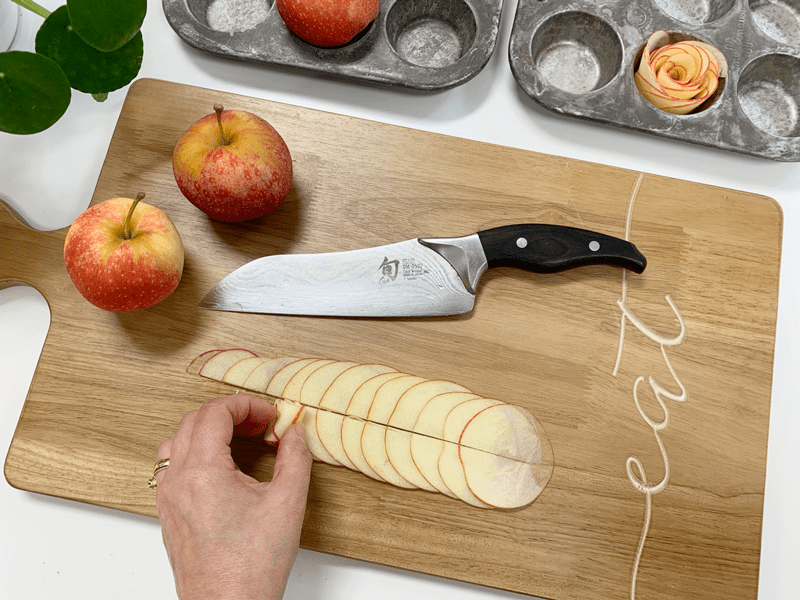
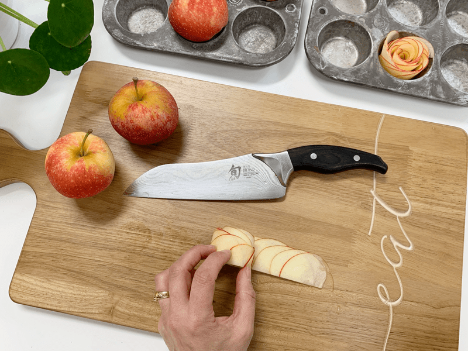
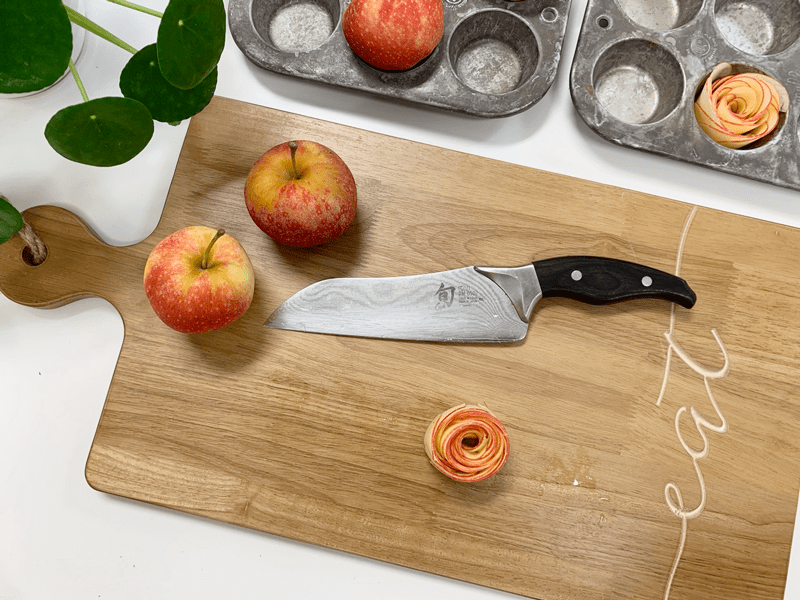
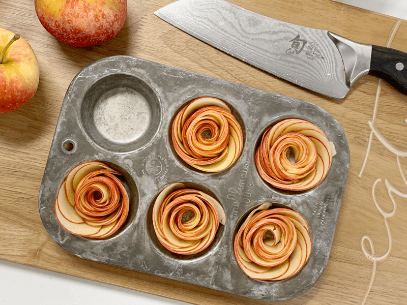

Antique Apple Blossoms
– raw, vegan, gluten-free, nut-free –
I have wanted to do this “apple art” for at least a year now. I am not sure why it took me so long getting around to it. I lost track of how many times I bought the apples… and how many times, I ate all those apples. Lol Fresh, crisp, juicy apples are a weakness for me… but better that than Twinkies or some other packaged “treat” right?!

These apple blossoms are so easy to make. My goal in making these was to create antique-looking blossoms, so I purposely skipped the process of dunking them in lemon water, which would have helped to preserve their color. Another step that is vital is in the timing of the dry time. I only dried these for 2 hours which was perfect. They weren’t too soft, nor were they too hard. Just right. So make sure that you have enough time in your schedule to stay home and to remove them at the 2-hour marker.

When selecting apples, keep the coloring in mind. I found that red apples were the best. I used Fuji and Pink Lady (which are more on the pink side). Apples that are more on the yellow were pretty too but slight rubyness from the red ones really defined the edges of each petal. You also want apples that are fresh, and crisp. Mushy apples are mealy in texture and won’t hold up well.
Ok, I talked about the importance of the dry time, and in selecting the right apple, the last thing that I wanted to cover quickly is the cutting technique. I highly recommend that you use a mandolin to create thin and even slices. If the slices are too thick, they will snap and if the slices are too thin… they will snap. I ate a lot of broken apple slices. Hehe, I used one that is similar to (this) one. Mine doesn’t have the thickness adjustment but makes almost see-through thin slices. Before slicing up all your apples, test a few slices, and see how they roll.

The quantity of the apples listed below is just a guideline. You might need more or less, depending on what you plan on doing with them. I hope you found this helpful and that it fills you with inspiration. Please comment below and have a blessed day, amie sue
Ingredients:
- 3-6 organic red-skinned apples
Preparation:
Slicing the apples:
- Wash and dry the apples. Leave the skins on.
- With a mandoline, create very thin slices.
- If they are too thick, they will snap when you try to roll them.
- It is a good idea to make a few slices and then test their flexibility before slicing all the apples and finding out later that they are too thick.
Creating the blossoms:
- I used a mini muffin pan to hold my apple blossoms in.
- Start by laying out about 10-15 slices, laying the slices out horizontally, skin side facing down, overlapping the previous apple by half to three-quarters (see photos below).
- Slide a knife down the center of the apples, creating two rows.
- On the first row, begin rolling tightly from one end toward the other, using one hand to roll and the other to support, continue to roll the apple flower onto the second roll, just as you did the first time around. The pictures below will help to make better sense of this.
- You will find that you use just about all your fingers to help hold everything in place.
- Place the apple flower into the muffin tin and then gently tug the petals to the sides, causing the slices to pull apart as though the flower is blooming.
- Repeat until you have made all the blossoms that you desire.
- Slide the whole pan into the dehydrator and dry at 115 degrees (F) for 2 hours or longer. They will still have some moisture in them.
-

-
Lay the apple slices out in an overlapping pattern. Starting with small, ending with large.
-

-
Starting “here”, start the rolling action working your way to the other end.
-

-
Be GENTLE. If the apples keep breaking, it could be due to too thin of slices, too thick, or the apples are mushy.
-

-
Use all the tips of your fingers to hold things together as you roll.
-

-
End result.
-

-
Place in a muffin tin and gently tug at the slices to help them relax. Dehydrate as indicated above.
© AmieSue.com